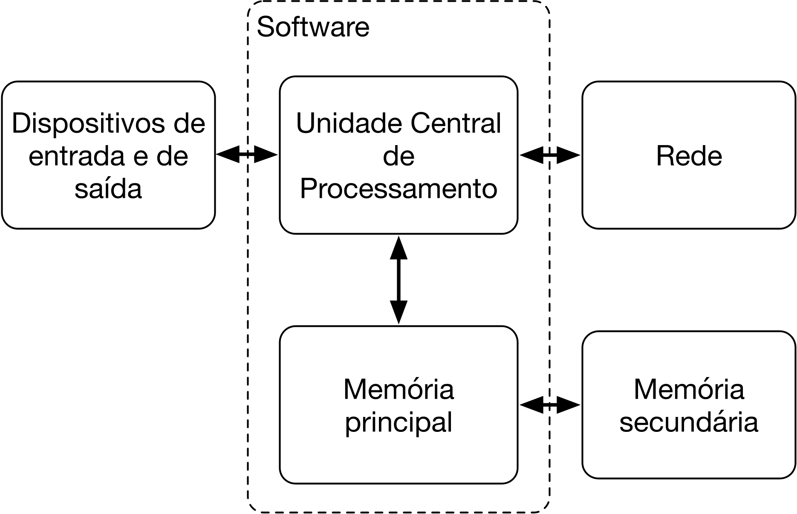

Porque aprender a programar?
Programar, ou escrever programas, é uma atividade altamente criativa e recompensadora. Você pode escrever programas por diversas razões, que variam desde ganhar dinheiro resolvendo problemas complexos de análise de dados, até simplesmente se divertir ajudando alguém a resolver um problema. Este texto parte do pressuposto de que todos precisam aprender a programar e, uma vez que você tenha adquirido essa habilidade, cabe a você decidir como aplicá-la.
Computadores como assistentes pessoais¶
Em nosso cotidiano, estamos cercados por computadores que variam de laptops a telefones celulares. Podemos concebê-los como nossos assistentes pessoais, capazes de resolver uma ampla gama de problemas. O hardware desses dispositivos foi construído para, essencialmente, perguntar de forma contínua: "o que eu devo fazer agora?".
Os programadores adicionam um sistema operacional e um conjunto de aplicações ao hardware, transformando-o em um assistente pessoal suficientemente útil e capaz de nos ajudar em diversas tarefas. Nossos computadores são rápidos e possuem grande capacidade de memória, podendo ser extremamente úteis quando conhecemos a linguagem necessária para instruí-los.
Se dominarmos essa linguagem, podemos delegar ao computador a execução de tarefas repetitivas. Curiosamente, o que os computadores fazem com excelência são precisamente as tarefas que os humanos consideram tediosas e mentalmente estafantes.
A complementaridade entre humanos e computadores¶
Considere este exemplo: examine os três primeiros parágrafos deste texto e identifique a palavra que mais aparece, bem como sua frequência. Enquanto você é capaz de ler e compreender o conteúdo em poucos segundos, a contagem de palavras é uma tarefa complicada e entediante, pois não corresponde ao tipo de problema para o qual o cérebro humano foi projetado. Para o computador, ocorre o inverso: a leitura e compreensão de texto são desafiadoras, mas a contagem de palavras e a identificação da mais frequente constituem uma operação trivial.
Esta complementaridade de habilidades é precisamente o motivo pelo qual você deve se tornar proficiente na "linguagem dos computadores". Ao aprender essa linguagem, você poderá delegar tarefas mundanas ao seu parceiro digital, liberando tempo para que você se dedique às atividades nas quais possui vantagem comparativa. Nessa parceria, você contribui com criatividade, intuição e inventividade, enquanto o computador processa dados com precisão e velocidade.
Criatividade e motivação no desenvolvimento de programas¶
Aprender a programar pode ser uma experiência recompensadora tanto financeiramente quanto pessoalmente. Embora este texto não seja voltado exclusivamente para programadores profissionais, é importante ressaltar que a programação profissional oferece inúmeras oportunidades criativas e lucrativas. Desenvolver programas úteis, elegantes e inteligentes que outras pessoas utilizam é, por si só, um processo intrinsecamente criativo.
Atualmente, seu computador ou telefone celular provavelmente contém diversos programas criados por diferentes equipes de programadores, todos competindo pela sua atenção e interesse. Durante o desenvolvimento desses aplicativos, os programadores se esforçam para atender às suas necessidades e proporcionar uma experiência de usuário satisfatória. Ao optar por utilizar um programa específico, você contribui diretamente para recompensar os programadores responsáveis pelo seu desenvolvimento.
Do aprendizado à aplicação prática¶
Neste estágio inicial do aprendizado, nosso principal objetivo não é obter lucro ou agradar usuários finais, mas sim desenvolver nossas próprias habilidades para nos tornarmos mais produtivos ao manipular dados e informações que encontramos cotidianamente. Inicialmente, você desempenhará simultaneamente os papéis de programador e usuário final.
À medida que você aprimora suas habilidades como programador e desenvolve sua criatividade, é natural que seus interesses se expandam para a criação de programas destinados a outras pessoas. A partir desse ponto, sua motivação poderá evoluir para oferecer soluções que impactem positivamente os usuários e, eventualmente, obter reconhecimento e recompensas por seu trabalho.
O aprendizado de programação representa, portanto, não apenas a aquisição de uma habilidade técnica, mas também o desenvolvimento de uma nova forma de pensar e resolver problemas – uma competência cada vez mais valorizada no mundo contemporâneo, independentemente da área de atuação profissional.
Arquitetura do hardware do computador¶
Antes de começarmos a aprender a linguagem que iremos "falar" para dar ordens aos computadores ao desenvolvermos um programa, precisamos aprender um pouco sobre como os computadores são construídos. Se você pudesse desmontar o seu computador ou telefone celular e olhar dentro dos componentes principais, veria as partes identificadas na figura a seguir.

Componentes da arquitetura de um computador
As definições em alto nível dessas partes são:
- Unidade Central de Processamento (UCP, também conhecida pela sigla em inglês CPU) é a parte do computador construída para ser obcecada pela pergunta "e agora, o que faço?". De uma maneira bem simples, se o computador tem uma velocidade de 3GHz, isso significa que a UCP vai perguntar "e agora, o que faço?" três bilhões de vezes por segundo. Você precisa aprender a falar rápido para manter a UCP ocupada.
- A Memória Principal é usada para armazenar informação que a UCP precisa rapidamente. A memória principal é quase tão rápida quanto a UCP. Mas a informação armazenada na memória principal se esvai quando o computador é desligado.
- A Memória Secundária também é utilizada para armazenar informação, mas é muito mais lenta que a memória principal. A vantagem da memória secundária é que ela pode armazenar informação mesmo quando não há energia alimentado o computador. Exemplos de memória secundária são os discos rígidos, discos de estado sólido, cartões de memória e pen drives.
- Os Dispositivos de Entrada e Saída são simplesmente nossas telas, teclados, mouses, microfones e caixas de som entre outros. Eles são a forma como interagimos com o computador.
- Nos dias atuais, a maior parte dos computadores também possuem Conexão de Rede para poder recuperar informação a partir de uma rede de computadores, como a Internet, por exemplo. Podemos pensar na rede como um lugar bem lento para armazenar e recuperar informação e, de alguma forma, como uma memória secundária não confiável.
Mesmo que a maior parte dos detalhes desses componentes seja conhecida e esteja sob responsabilidade dos engenheiros que constroem os computadores, ajuda conhecer alguma terminologia para que possamos falar dessas diferentes partes enquanto escrevemos nossos programas.
Como um programador, seu trabalho é usar e orquestrar cada um desses recursos para que resolvam o problema que você precisa resolver e permitam a análise dos dados que você obtém da solução. Como um programador, na maior parte das vezes você vai estar "falando" com a UCP e dizendo o que ela deve fazer agora. Algumas vezes, você vai dizer à UCP que use a memória principal, a memória secundária, a rede ou os dispositivos de entrada e saída.
Você precisa ser a pessoa que vai responder à questão da UCP ("e agora, o que faço?"). No entanto, é impraticável instruir a UCP diretamente na velocidade de três bilhões de instruções por segundo. Assim, você deve escrever essas instruções de forma antecipada. Nós chamamos essas instruções armazenadas de programa, e o ato de escrever essas instruções de forma correta é chamado de programar.
Vai ser assim? Programar em C ou outra linguagem, direto?¶
Ao iniciar a programação, dificilmente conseguimos escrever programas diretamente na linguagem escolhida, seja ela Python, Ruby, C, Java, C# ou qualquer outra que você imaginar.
Isso acontece (quase sempre) tanto com os novatos quanto com os experientes. Com o tempo, e com o domínio que você passa a ter sobre a linguagem, problemas pequenos podem até ser resolvidos diretamente na linguagem de programação, mas geralmente você vai sentir a necessidade e criar um "rascunho da solução", de definir grandes passos ou etapas necessárias para resolver o problema. Nesses casos aparecem os algoritmos.
O termo algoritmo se origina da matemática, especificamente da álgebra, e deriva da forma latina (algoritmi) do nome do matemático persa Abu Ja'far Muḥammad ibn Mūsā al-Khwārizmī1, que viveu entre 780 a 850 EC no Califado Abássida2 (750 a 1299 EC). É dele o sistema de numeração decimal posicional que adotamos hoje (unidade, dezena, centena, unidade de milhar...) e várias contribuições para a álgebra, como por exemplo seis tipos de equações algébricas e suas respectivas soluções (ou, na nomenclatura de hoje, os algoritmos). Ele não atuou apenas na matemática: há contribuições do al-Khwarizmi na astronomia, geografia e no calendário judeu por exemplo.
Algoritmos podem ser definidos de diversas formas:
- Sequência finita e ordenada de passos que resolvem um problema
- Uma sequência de passos que visa atingir um objetivo bem específico
- É a descrição de uma sequência de passos que deve ser seguida para a realização de uma tarefa
- É uma sequência finita de instruções ou operações cuja execução, em tempo finito, resolve um problema computacional, qualquer que seja sua instância
- São regras formais para a obtenção de um resultado ou da solução de um problema, englobando fórmulas de expressões aritméticas
- É um conjunto de passos que levam à solução de um determinado problema
- Um procedimento passo-a-passo para a solução de um problema
- Uma sequência detalhada de ações a serem executadas para realizar alguma tarefa
Algoritmos podem ser definidos de diversas maneiras, mas sua essência permanece a mesma: uma sequência estruturada de passos claramente definidos para a resolução de um problema específico.
É importante entender desde o início que um algoritmo não é a solução de um problema, pois problemas podem ter várias soluções. Os caminhos que levam a uma solução são muitos, logo, não existe apenas um algoritmo para resolver um problema, e sim vários possíveis. Todos estão corretos. Talvez alguns sejam mais rápidos, outros consumam mais memória, outros gastem mais energia, mas todos eles, se resolverem o problema, são algoritmos válidos (ou "corretos" se você quiser usar esse termo).
flowchart LR
A[Problema] --> S1(Algoritmo 1) --> X[Solução]
A --> S2(Algoritmo 2) --> X
A --> S3(Algoritmo 3) --> X
A --> S4(Algoritmo 4) --> X
style S3 fill:#ADD8E6,stroke:#000,stroke-width:1px
style A fill:#ADD8E6,stroke:#000,stroke-width:1px
style X fill:#ADD8E6,stroke:#000,stroke-width:1px
linkStyle 4,5 stroke:#FF0000,stroke-width:3pxHá diversos algoritmos que solucionam um problema, cada um com características (tamanho, consumo de memória, tempo de execução...) diferentes.
Assim, apesar de este site focar na produção de programas utilizando C ou Python, é fundamental entender que, na construção das soluções, poderemos (e na maior parte das vezes iremos) passar por um estágio intermediário onde um algoritmo será construído. Há vários livros que discutem em detalhes o processo de construção de algoritmos utilizando diversas técnicas, como descrição narrativa, fluxograma ou português estruturado e eles podem ser consultados se o leitor assim desejar.
Entendendo a programação¶
No resto deste site nós vamos tentar te transformar em uma pessoa com habilidades na arte de programar. No final, você vai ser um programador — talvez não um programador profissional, mas pelo menos você terá as habilidade para olhar para um problema de análise de dados ou informações e desenvolver um programa que o solucione.
De certa forma, você precisa de duas habilidades para ser um programador:
- Primeiro, você precisa conhecer a linguagem de programação (no nosso caso, C ou Python) — você precisa conhecer o vocabulário e a gramática. Você precisa ser capaz de soletrar as palavras nessa nova linguagem de forma correta e precisa saber como construir sentenças "bem formadas" nessa nova linguagem.
- Em segundo lugar, você precisa "contar uma história". Ao escrever uma história, você combina palavras e sentenças para apresentar uma ideia ao leitor. Há uma mistura entre habilidade e arte para construir histórias, e melhorar as habilidades de escrever histórias passa por escrever várias histórias e obter avaliação dessas histórias. Em programação, nosso programa é a "história", e o problema que estamos tentando resolver é a "ideia".
Uma vez que você aprender uma linguagem de programação, você achará muito mais fácil aprender uma segunda linguagem de programação, como TypeScript, Java ou C#. A nova linguagem de programação vai ter vocabulário e gramática diferentes, mas as habilidade de resolver problemas serão as mesmas em qualquer linguagem de programação.
Acreditamos que você aprenderá o vocabulário e as sentenças de C ou de Python rapidamente. Levará mais tempo para que você seja capaz de escrever um programa coerente que resolva um problema novo. Ensinamos a programar mais ou menos da mesma forma que ensinamos a escrever. Começamos lendo e explicando programas, depois escrevemos programas simples, e vamos aumentando a complexidade dos programas ao longo do tempo. Em algum momento você "pega o jeito" e começa a identificar padrões sozinho e consegue ver de forma mais natural como encarar um problema e escrever um programa que o resolva. E quando você chegar a esse ponto, programar vai se tornar uma atividade agradável e criativa.
Vamos começar com o vocabulário e a estrutura de programas em C ou Python. Seja paciente, pois esses exemplos simples talvez sejam parecidos os textos que lhe foram apresentados quando você começou a ler pela primeira vez: bobinhos, mas fundamentais para entender textos mais complexos.
Mas antes, vamos começar falando de algoritmos.
Veja bem, preste atenção!
Aprender a programar é igual a aprender a nadar.
Por mais que você sente ao lado da piscina e fique vendo o professor nadar, mover os braços, virar a cabeça para respirar e mover as pernas de forma coordenada, você só vai aprender a nadar se você fizer esses movimentos. Enquanto você não entrar na água e enfrentar as dificuldades iniciais inerentes ao processo, como movimentos descoordenados e ajustes contínuos, não conseguirá desenvolver suas habilidades. Apenas observar o instrutor demonstrar repetidamente não será suficiente para que você aprenda a nadar.
Ler este material e acompanhar as aulas é sentar ao lado da piscina e ver o professor nadar. Se você não tentar escrever os programas, não fizer os exercícios, não encarar erros, não tentar resolver os erros, você não vai aprender a programar — sinto muito.